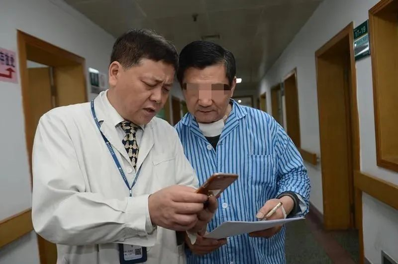

武汉感染科医生的日常 | 图集
原文链接 备份链接 图、文 丨 雷钊 编辑 丨 林鹏 吕萌 武汉长江航运总医院（下文简称长航医院）感染科的医生许绿叶再过一年多就要退休，新型冠状病毒肺炎疫情扩大后，她临危受命成为医院专家组组长。今年59岁的她，曾担任感染科主任，参加过多起 …
记者/**郭慧敏 实习记者/胡琪琛**
*编辑/计巍 宋建华*

武汉市中心医院举办的义诊活动中的江学庆
在患者眼里，江学庆温暖到了极致。秋冬时候问诊，江学庆怕自己手凉，总会搓暖了再去接触患者的脖子，遇到过于焦虑与恐惧的患者他也从不急躁，会幽默安慰：如果人这一生总要过这个关的话，患甲状腺癌是最好的，因为这个癌最“懒”，只要治好基本就没事了。
3月1日，这位“最亲切”的“60分贝暖医”因新冠肺炎离世。
当天上午，武汉中心医院官方微信发布公告称，武汉市中心医院甲状腺乳腺外科党支部书记、主任、主任医师、中国医师奖获得者江学庆，在抗击新冠肺炎疫情工作中不幸染病，经全力抢救无效，于3月1日凌晨5点32分在武汉市肺科医院去世。
大约五小时前，江学庆的女儿江紫妍收到武汉市中心医院打来的电话，医生在电话中告诉她父亲江学庆病情突然恶化，需要抢救。彼时，江学庆已经使用体外膜肺氧合（俗称“人工肺”，主要用于对重症心肺功能衰竭患者提供持续的体外呼吸与循环，以维持患者生命，以下简称ECMO ）33天，身体条件很差，抢救人员到最后曾通过每10分钟打一次肾上腺素的方式，试图挽回江学庆的生命，可惜以失败告终。
“他是那么强大的一个人，我从没想过他会倒下，变成那个样子。”江紫妍说。在她心中，父亲拥有魔法，能让接触他的所有人感到心安。“他以前常跟我说有爸爸在，什么都不用怕，只要开心就好了，但现在他走了……”
张朝阳是江学庆的同学兼同事，当得知好友在工作岗位上染病时，张朝阳既觉得惋惜，又觉得是一名医生的职责所在，“我不觉得医生是英雄，即使是，也是被逼着当的。”江学庆的去世让张朝阳有种无法掌控自己命运的感觉，总觉得“灾难”随时可能落到任何一个人身上。

江学庆和病人在一起****

持续五小时的抢救
3月1日零时，江紫妍收到武汉市中心医院打来的电话，医生在电话中告知她父亲江学庆病情突然恶化，“当时说他血压往下掉的很厉害，专家进行了紧急会诊，然后大概十二点半开始抢救。”彼时，江紫妍的母亲已经休息，因为心绞痛等疾病，她在睡前服用过安眠药，没想到错过了医院的电话。
江学庆是武汉市中心医院甲状腺乳腺外科（以下称甲乳外科）主任，1月17日，始终坚守在一线岗位的他确诊感染新冠肺炎。当天他给女儿发微信告知了自己确诊的消息，并说得了这个病情况可能会很不好。江紫妍猜想，即使是身为医生的父亲，面对新冠肺炎，他内心肯定也是感到恐惧的。
她回忆，1月13日父亲已经有了低烧和拉肚子的症状，但他说自己只是着凉了，再加上父亲患有胆结石和胃溃疡，家人都以为拉肚子是这两种疾病的反应，并没有联想到新冠肺炎。“那时候爸爸还在坚持看诊，说第二天有重要的病人，已经答应了要亲自给人家做手术，所以不能休息。”
同在武汉市中心医院工作的张朝阳是江学庆的大学同学，他回忆自己与江学庆的专家门诊同在13日，江学庆当时已经开始发热，但看完门诊之后并未休息，反而接连做了几天手术。江紫妍后来听父亲同科室的同事说，17日，父亲开会时已经站不住了，才去拍片子做了检查，并于当天确诊新冠肺炎。
确诊第二天，江学庆病情突然加重，第三天就用上了无创呼吸机，第四天转入武汉中心医院呼吸科ICU ，张朝阳称江学庆的感染情况比同医院的李文亮医生还要严重。武汉中心医院医生陈琦推测，江学庆的感染应该和接诊病人有关，因为医院离华南海鲜市场较近，且他的病人多、门诊量大。
1月22日，江紫妍收到医院通知，说父亲病情很严重需要转院，需要家属签转院同意书。“我们在感情上无法接受，好好的一个人才两天时间，你跟我说他病得很严重……”江紫妍与姑姑一起来到医院商量转院事宜，医院领导向其说明了病情变化、转院利弊之后，征得了她的同意。两小时之后，江紫妍和姑姑在武汉中心医院门口见到了父亲——两米之外，父亲带着呼吸机面罩，闭着眼皱着眉。
此时距离江紫妍上一次见父亲已经过去18天。自从疫情爆发、江学庆开始一线的救治工作之后，与家人就再没碰过面。“他是那么强大的一个人，我从没想过他会倒下，变成那个样子。”27日，因为治疗需要，已经气管插管的江学庆开始使用ECMO，并在此后的33天，都没能离开这个急救设备。
江紫妍回忆，3月1日的抢救大约持续了五小时，期间她一直和医院保持联系。过程中，医院曾打来电话说所有的抗生素基本都用过了，并没有明显效果。最后医院传来消息，只能通过每10分钟打一次肾上腺素的方式，试图挽回江学庆的生命，可惜以失败告终。“我爸爸用ECMO的时间实在太长了，抢救的时候身体条件已经很差，再说不停打肾上腺素人也很痛苦。”
当日凌晨5点32分，55岁的江学庆在武汉市肺科医院去世。因为出嫁后仍和父母同住一个小区，江紫妍先是给母亲打了电话，随后马上赶到家中陪伴。平时因为母亲身体不好，父亲感染新冠肺炎后的相关事宜都由江紫妍负责，关于父亲的病情她也总是选择性地告诉母亲，但这一次的消息，没了任何选择的余地。

工作时的江学庆
60分贝暖医
“暖”几乎是所有患者对江学庆的一致评价，就连医院在举办义诊活动时，也会在江学庆的名牌上多打几个字：60分贝暖医。江学庆在问诊时有个原则——说话音量要尽量控制在60分贝以下，且要注意措辞和语气，尽量为患者营造舒适的就诊环境。他还规定科室所有医护人员，一律不许对患者大声说话或态度急躁。
杨思雨是江学庆的患者之一。2018年夏天，杨思雨患了乳腺结节，辗转几家医院得到的答案都是需要做手术，在犹豫不决想详细询问医生建议时，得到的回复往往是：要么做手术，要么自己想别的办法。最后她来到武安市中心医院，挂了江学庆的专家号。
问诊的时候，杨思雨问为什么微创手术还要全麻？麻药会不会让人变傻？面对一连串的问题，江学庆没有半点急躁，反而幽默回应：不全麻的话，你一紧张坐起来怎么办，而且你这么聪明不会傻的。手术后，杨思雨问护士几天可以出院，护士回答江医生的病人出院很快，不会乱开药。回忆起这些，杨思雨说：“他是我遇到过最亲切的医生。”
秋冬问诊时，江学庆怕自己手凉，总会搓暖了再去接触患者的脖子。张怀庆是个甲状腺癌患者，她第一次见到江学庆是2016年夏天。当时江学庆刚下手术，还穿着手术衣就过来看诊，摸了一下张怀庆的喉咙，看到对方一脸紧张，还拍着她的肩膀用武汉话说：“丫头别担心，不是多大个事儿，既然是个不好的东西（肿瘤），我们把它摘了就行了。”
张怀庆问：“很严重吧？”江学庆点点头说：“肯定是不好的，但是不怕，有我在一定会根据你的个人情况想出一个最好的、最合理的手术方案，我做过好多这样的手术，都恢复得很好，特别是像你这样的年轻人。”听了这番话，张怀庆很快放松下来。
江学庆紧接着又说：“如果人这一生总要过这个关的话，患甲状腺癌是最好的，因为它最安全，这是一个很懒的癌症，只要治好基本就没事了。”她回忆，当时江学庆还跟她聊了许多生活琐事，“那样的交流让我有一种错觉，好像我们不是第一次见面的医生跟病人。”
“而且在他的‘熏陶’之下，他们整个科室（甲乳外科）都很温暖。”手术之后张怀庆需要隔一段时间来复查一次，因为江学庆比较忙，她挂了其他医生的号。但她发现，不管是哪位医生，沟通时都很温柔，对病人也很呵护。在她看来，一定是个人有足够的“魅力”，才使得整个团队都能达到这样的水平。
得知江学庆去世的消息之后，杨思雨一时恍惚，脑海中一下子满是江学庆开玩笑的样子，她不敢相信，马上去微博和武汉市中心医院的微信公众号确认消息，才不得不接受事实。她觉得很心痛：国家培养一个医生需要那么多年，却在一场战役中，可能因为没有铠甲被感染，实在不应该。
她甚至在想，用那么多优秀的一线医务人员的生命去换普通人的生命，到底值不值？

生活中的江学庆
“不负责任”的父亲
在江紫妍印象里，父亲总是在上班，待在家里的时间很少，从小到大，她见到父亲的机会始终不多。江紫妍上小学时，江学庆曾到黄冈市英山县扶贫，“那是个连饭都吃不饱的地方，但他还是去了。”两年后，扶贫归来的江学庆决定去美国深造，还曾把妻女接到美国短暂生活。
2006年，江学庆回国，开始在武汉中心医院甲乳科当主任，将科室的病床从几张床发展到后来的一两百张床。张朝阳称当时的江学庆可谓是“白手起家”，并把这个科室经营成武汉市属医院里的“绝对的第一名”，“他还是甲乳全国唯一一个中国医师的获得者，就他一个。”
江学庆是个内敛的人，几乎不和家人提起工作，但偶尔也会卸下铠甲，和家人谈起自己。江紫妍记得有一次做错事惹父亲生了气，他把她叫到身边说：“爸爸也好难，好难。”如今回想起这些往事，江紫妍泣不成声。
在这个三口之家里，作为父亲和丈夫的江学庆没能挪出多少时间陪伴家人。妻子曾问他：为什么要对医院、对科室和病人那么负责任，付出那么多，说句有私心的话，医院又不是自己家的，迟早不都要退休的吗？江紫妍称，一般这个时候，父亲不会做任何回答。
“我知道他是放心不下，他把科室里的每个医生护士都当成自己的孩子”，江紫妍说父亲“就是操心的命”，医院对他来说早就已经成为割舍不了的一部分。
在她看来，拼命工作是父亲生活中的常态，胆结石和胃溃疡都是工作以后得的。江学庆在学校时曾是足球队的一员，身体素质很好，但成为医生之后，作息、饮食都要依患者、看诊、手术而定。“我们整天跟他说要好好吃饭，但他每次都要把病人都看完才吃，病人那么多怎么看得完，有时候一个紧急电话又要上手术台……”
武汉中心医院医生吴杰称，江学庆的工作量一直很大，甲乳外科每天大概有二三十台手术，大多数病人都是找江学庆的。张朝阳回忆江学庆看门诊时，正常看诊时间应该是从早上8点到中午12点，但他经常忙到下午两三点钟，一上午要看一百多个病人，每次都要把病人看完再吃饭。
江学庆最常说的话就是“没事，没问题”，在病人因为病情焦虑时他会这样说，在家人因为琐事困扰时也会这样说。他总能让人心安——在江紫妍看来，这是一种父亲独有的“魔法”，哪怕是刚刚接触的病人，听到父亲说没问题，仿佛就真的觉得没问题。
“他以前常跟我说，有爸爸在什么都不用怕，只要开心就好了，但现在他走了，我以后该怎么办？”但江紫妍知道自己必须要赶快撑起来，她的身后还有需要安慰的母亲以及九旬的爷爷奶奶。
江学庆去世之后，江紫妍拿到了父亲的手机，她发现，父亲在确诊的第二天（1月18日）曾给爷爷奶奶录过一个视频，他在视频中说：“儿子这么大了还不懂事，都没有时间陪陪爸爸妈妈，这次我一定会争气挺过来，等病好了腾出时间好好陪你们。”同一天，江学庆还发微信叮嘱女儿：近期不准到处跑。

***江学庆*正在为患者做手术（右一）**
“被逼着当英雄”
父亲被宣布抢救无效死亡之后，江紫妍在父亲的同学群里发布消息：谢谢大家这么长时间给予我爸爸和我的关心和帮助，我爸爸刚刚还是没能挺过来，感染太严重，每十分钟一支肾上腺素才勉强维持血压，他走了也是解脱，再次谢谢大家。
微信发出之后，群里被流泪和蜡烛的表情刷屏。“除了这个，还能说什么呢，我之后一定会去参加他的葬礼”，作为江学庆的同学兼同事，张朝阳说，自己确认这个信息的时候已经“麻木”，从2月初开始，群里就一直有关于江学庆病情的讨论，一下子说他要抢救，一下子又说他要走了。
张朝阳曾给江学庆发微信：“外面有各种传闻，你现在到底怎么样？”但迟迟没有等来回复。“我知道他坚持得太难，也知道我们院李文亮走了以后，下一个很可能就是他，因为病情太严重”。
张朝阳早就为江学庆的病情担忧难过。“第一次见到他的CT片子时，一下子眼泪就流出来了。”张朝阳和江学庆之间的友谊已有39年，相互合作得十分默契，很多从甲乳外科转到张朝阳科室的病人都找他来看诊。好友在工作岗位上染病，张朝阳觉得惋惜，但又是职责所在，“我不觉得医生是英雄，即使是，也是被逼着当的。”
张朝阳称武汉中心医院已经有几百个医护人员感染新冠肺炎，但具体数量不清楚。目前医护人员需要轮换岗位，因为长期面对新冠疫情，他们的身体和心理都承受极大压力，且随着时间的推移，感染风险会越来越高，另一方面外地医疗队进驻中心医院，也在一定程度上缓解了救治压力。
江学庆的去世让张朝阳有种无法掌控自己命运的感觉，他回忆前段时间上班，大家最关心的就是今天又有几个同事感染了，每天平均有多少同事会被感染，总觉得“灾难”随时可能落到任何一个人身上。
（除江学庆、江紫妍、吴杰之外，文中人物均为化名）
**【反侵权公告】本文由北京青年报在今日头条独家首发，未经授权，不得转载。**


3例病理解剖初步诊断完成 死者肺部有黏液性分泌物| 深度报道
 不想成为英雄，只是想不被绝望困住|深度报道
不想成为英雄，只是想不被绝望困住|深度报道

送别李文亮医生：愿天堂没有病毒| 深度报道


原文链接 备份链接 图、文 丨 雷钊 编辑 丨 林鹏 吕萌 武汉长江航运总医院（下文简称长航医院）感染科的医生许绿叶再过一年多就要退休，新型冠状病毒肺炎疫情扩大后，她临危受命成为医院专家组组长。今年59岁的她，曾担任感染科主任，参加过多起 …
原文链接 备份链接 那些缺氧的患者就像一个人往悬崖上走，路一直是平的，向前走的时候他看不到悬崖，医生也看不到。等你反应过来，他一只脚已经掉下去了 这个肺炎的确是颠覆了这么多年看普通肺炎的经验…… 面对一个崭新的疾病，每个医生积累的所谓 …
原文链接 备份链接 致敬所有奋战在一线的医护人员。 武汉的一月，气温总在10度以下，阴雨天气占了大半。2020年1月14日那天，不仅有雨，还有三到四级的风。武汉协和东西湖医院重症监护室（ICU）主任袁海涛和他的同事，推着一个因病毒性肺炎插 …
原文链接 备份链接 住进武昌方舱的第二天，付丹看到有人在垃圾站收拾，将在地上扔得乱七八糟的垃圾捡起来放到垃圾箱里。她感到有些奇怪，清洁工怎么没有穿防护服呢。一问，原来那人是住在同一个病区的病友，住在159号床。 文***｜******* …
原文链接 备份链接 专家门诊 | 合理用药 | 热点聚焦 | 手术日 | 医学史 手术日 手术室里的惊心动魄 按 凶险，无时不刻在发生。。。 1 才从隔离病房出来，24小时，10个人的团队插管20多次，快累趴~~~ 好在总算基本满足了部分 …